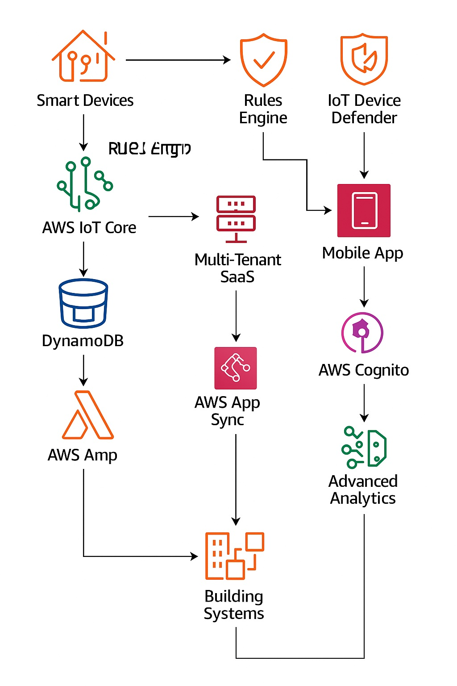
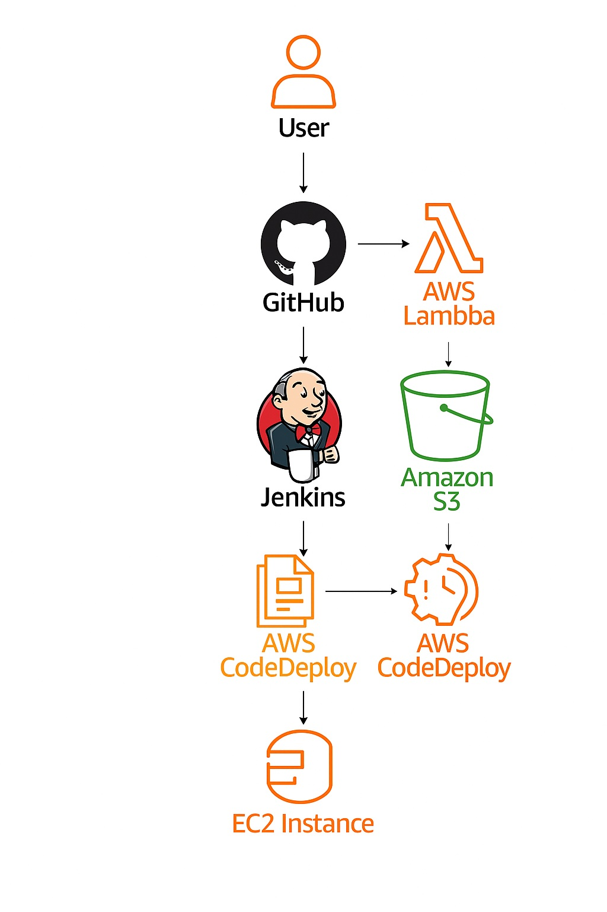

Hands-on – AWS Cloud Projects 🚀
Leveraging practical knowledge of cloud technologies to design and deploy scalable, secure, and cost-optimized infrastructure solutions.
Here are some of my key projects that showcase my expertise in AWS cloud solutions, including VPC deployments, secure architectures, and legacy migrations.
Each project highlights my ability to design, implement, and manage cloud environments effectively.

Project 1
Automated EC2 Deployment Pipeline Using AWS CodePipeline and GitHub.
This project outlines an automated deployment pipeline using AWS CodePipeline, CodeDeploy, and GitHub to deliver application scripts to Amazon EC2 instances. This solution enables continuous delivery from a GitHub repository to Amazon EC2 instances with zero manual deployment steps.
- The GitHub repository contains two critical files: These files are packaged together and passed through the deployment pipeline automatically. The compute layer has EC2 instances configured with AmazonSSMManagedInstanceCore for secure Systems Manager access and inline policies that grant s3:GetObject access to retrieve artifacts.
- AWS CodePipeline orchestrates the flow: The CodePipeline service role has been updated with the required IAM permissions to integrate with GitHub, S3, CloudWatch Logs, and CodeDeploy. CodeDeploy locates the EC2 targets, deploys files to /home/ec2-user/testhelloworld, and executes script.sh using the AfterInstall hook.
- From the user’s perspective, the process is seamless: Within minutes, the latest changes are deployed securely and automatically to production. This architecture enables secure, auditable, and repeatable deployments using AWS-native tools and promotes best practices in continuous delivery.
Click on the Learn more button below to view the project details and implementation steps.

Project 2
Neural Climate:
Intelligent Cloud-Integrated HVAC System.
Neural Climate is a smart, cloud-based HVAC system that integrates IoT, cloud computing, and machine learning to provide dynamic environmental monitoring and control. This system improves operational efficiency, reduces maintenance costs, and enhances energy savings for a variety of users.
The system delivers real-time diagnostics, predictive analytics, and automation by integrating edge-based sensor networks with AWS cloud services—all while reducing energy consumption and maintenance costs.
Infrastructure Flow
The following outlines how system components integrate and work together:
Edge Devices: Smart thermostats and environmental sensors collect real-time temperature, humidity, and occupancy data from buildings.
AWS IoT Core: Manages device connectivity, authenticates devices, and streams telemetry to backend services.
Amazon S3 and DynamoDB: S3 archives ML artifacts, logs, reports, and backups, while DynamoDB stores time-series sensor data for analytics and historical visualization.
IoT Gateway: Serves as a communication bridge, transmitting encrypted sensor data to the cloud via MQTT.
AWS Lambda and CloudWatch: Lambda processes incoming data, triggers workflows like threshold alerts, and formats input for ML; CloudWatch aggregates logs, monitors metrics, and sends alerts for system health.
Amazon SageMaker: Trains and deploys ML models to predict system faults, optimize temperature settings, and detect energy inefficiencies.
Click on the Learn more button below to see in-depth details on how the system was designed, implemented, and how each component contributes to its overall functionality.
Project 3
SmartDeploy: Automated CI/CD Pipeline with GitHub, Jenkins & CodeDeploy

SmartDeploy is a scalable, four-stage CI/CD pipeline that automates the journey from source code to a live staging environment. It orchestrates the full software delivery cycle—triggering builds from GitHub, compiling via Jenkins, and deploying seamlessly with AWS CodeDeploy.
This project demonstrates a practical implementation of continuous integration and delivery by orchestrating GitHub, Jenkins, AWS CodePipeline, and CodeDeploy into a cohesive automation workflow.
Pipeline Architecture
Source (GitHub):
Developers push code to a GitHub repository, which automatically triggers the pipeline. Webhooks ensure real-time updates to CodePipeline.
Build (Jenkins):
Jenkins, configured as a custom build provider in AWS CodePipeline, pulls the latest code, runs unit tests, and packages the application. The build artifacts are then archived and pushed to Amazon S3.
Deploy (CodeDeploy):
AWS CodeDeploy takes the packaged build and deploys it to a staging EC2 environment. The deployment group uses the CodeDeploy agent and application specification files (appspec.yml) to manage lifecycle events like BeforeInstall and AfterInstall.
Staging Environment:
The EC2 instance(s) in the staging environment are pre-configured with CodeDeploy agents and monitored through AWS CloudWatch to ensure successful deployments.